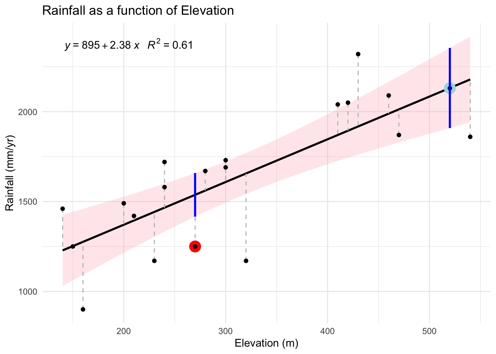

Registered S3 methods overwritten by 'ggpp':
method from
heightDetails.titleGrob ggplot2
widthDetails.titleGrob ggplot2
Attaching package: 'ggpp'
The following object is masked from 'package:ggplot2':
annotate
8.2 Scatter plot
We plot the data and add the OLS line, its equation, vertical residual lines and the confidence interval (pink area).
We emphasize two points (the 7th and 18th) for which we later calculate the confidence interval. We see 18 is located outside of the confidence interval and 7 is located right on the estimated line, but is also one of the largest points in terms of elevation.
p<-ggplot(RainScotland, aes(x = Elevation, y = Rainfall)) +stat_poly_eq(aes(label =paste(..eq.label.., ..rr.label.., sep ="~~~")),formula = y ~ x, parse =TRUE) +geom_smooth(method ="lm", se =TRUE, color ="black",fill="lightpink", alpha =0.3)+geom_segment(aes(xend = Elevation, yend =predict(lm(Rainfall ~ Elevation, data = RainScotland))), linetype ="dashed", color ="gray", size =0.5) +labs(title ="Rainfall as a function of Elevation", x ="Elevation (m)", y ="Rainfall (mm/yr)")+geom_point(data=RainScotland[18,], size=5, color="red")+geom_point(data=RainScotland[7,], size=5, color="lightblue")+geom_point()+theme_minimal()
Warning: Using `size` aesthetic for lines was deprecated in ggplot2 3.4.0.
ℹ Please use `linewidth` instead.
p
Warning: The dot-dot notation (`..eq.label..`) was deprecated in ggplot2 3.4.0.
ℹ Please use `after_stat(eq.label)` instead.
`geom_smooth()` using formula = 'y ~ x'
8.3 Confidence Interval calculation
We now show how the pink area representing the 95% confidence interval is calculated.
The lower and upper bound for each predicted value can be obtained using the predict function. We can ask prediction and confidence bounds for any point (using newdata with the same variables as the original variables), but here we do it for all the observed ones and show the values for point 7 and 18.
model <-lm(Rainfall ~ Elevation, data = RainScotland)pred <-predict(model, newdata =data.frame(Elevation = RainScotland$Elevation), interval ="confidence")pred[c(7,18),]
We now compute the total residual standard error (RSE) of the model (also called the mean square error):
\[RSE=\sqrt{\frac{\sum (\text{residuals(model)})^2}{\text{model degrees of freedom}}}\],
which measures the average distance at which the observed values fall from the regression line. The residuals are the differences between the observed and predicted values (our vertical thin lines on the above figure).
The sum of squared residuals is divided by the degrees of freedom. In this case the degrees of freedom is 18 because we have 20 individuals and 2 estimated parameters: the slope (2.38mm/yr) and the intercept (elevation 895m).
We take the square root to get the RSE back to rainfall units, in this case it is equal to 243mm
Note that the RSE often denoted by sigma is also found in the summary of the regression model:
summary(model)$sigma
[1] 242.7918
For a specific observation, say the 18th or the 7th observation, we adjust the RSE for the known characteristics of the observation, i.e. its value along elevation, the predictor variable. More specifically if the observed elevation is very much away from the mean, it is going to have a large deviation to the mean, hence a large share of the total deviations (always squared to avoid mixing pluses and minuses) to the mean elevation in the sample and thus potentially more impact on the regression line.
Mathematically, the standard error of the fit at a given point ( ) is given by: \[
\text{SE}(\hat{y}) = RSE\sqrt{\frac{1}{n} + \frac{(x - \bar{x})^2}{\sum (x_i - \bar{x})^2}}
\]
where we see it increases with the global variance (variance of residuals) of the model, i.e. RSE, decreases with the sample size n, and increases with the distance to the mean along the x variable, which is the relative deviation quantity we just computed (compare 7 and 18).
Leaving aside the RSE, which we already calculated, we can combine the last two terms present under the square root and define the leverage of an observation (and simplify the standard error writing)
Leverage values range between \(\frac{1}{n}\) and 1, with higher values indicating greater influence on the regression model. 1 is for an observation that would stand extremely far from the mean and taking most of the variation in x.
Points farther from the mean of x have higher leverage, have a greater influence on the regression line and thus can increase the uncertainty of the predicted line. In Greene (p.99) ’s terms:
“the farther the forecasted point is from the center of our experience, the greater is the degree of uncertainty”
This is why the confidence intervals (pink ribbon) usually get wider away from the mean of x. This process is also reinforced by the density of data points, which is typically higher around the mean of x. The higher density providing more information and reducing uncertainty near the mean.
The equation above also shows that the leverage will decrease for every point as soon as n increases. When n increases the uncertainty decreases and the ribbon is narrower.
To compute the leverage for 7 and 18 we thus simply add \(1/n\) to our relative deviations:
With p predictors (here p=1) and n observations (here n=20), a rule of thumb is to consider a leverage is too high when \(\frac{p+1}{n}\) is significantly different from the average leverage. In our case, we have \(\frac{p+1}{n}=0.1\) and observation 7 may be considered having too much influence. In practice however, the significance of a leverage is examined after removing high leverage points and evaluating the effect of this removal on the regression coefficients and the overall model fit.
Pursuing, we compute the standard errors of the fit at the level of our observations 7 and 18:
In order to draw the pink ribbon, we need to additionally set a level of confidence to our estimate. By default most researchers use a 95% confidence interval. We then multiply our point standard error by the corresponding t-statistics, and add/remove it from the prediction to obtain the upper and lower bounds of the confidence interval area:
We first get the critical value from the t-distribution, using half of the 5% (thus 0.975) on both side:
t_value <-qt(0.975, df = model$df.residual)
then multiply by the standard error and add/remove it to/from prediction:
as well as the one computed by ggplot with se=TRUE option in geom_smooth
p+geom_segment(data=manualCI, aes(x=Elevation,xend=Elevation,y=LowerCI, yend =UpperCI), color ="blue", size =1)
`geom_smooth()` using formula = 'y ~ x'

##Prediction versus confidence interval
Finally, note that there is another interval to be used for prediction when we get new data, i.e. the prediction interval. You can get this interval from the predict function with the prediction option instead of confidence.
The standard error one uses here has the same ingredients but a slightly different definition:
While the confidence interval we have computed previously tells you how confident you can be that the fitted model represents well the data that was used for estimating the model, the prediction interval is for use when you want to infer a value for a new data based on the fitted model. Confidence intervals focus on the precision of the sample mean, while prediction intervals account for the variability of individual data points around that mean.
Suppose you have a new observation at 400m elevation where a rainfall of 1500 is measured. You can input the elevation (and all the other predictor variables in case of a multiple regression) in the predict function to find the range within which you can be 95% confident that the new observation is included, and thus for which the model is a reasonable tool to predict the rainfall.
In this case 1500 mm falls within the range of the model.
By construction, confidence intervals are narrower than prediction intervals. Prediction intervals have an extra RSE in the calculation. The intuition is that we don’t know the mean nor the variance of the population from which new observations are taken and the only thing we can do is to estimate the mean from the mean of our estimates, which itself will vary based on the variance considered. We can only use the RSE again to estimate this variance for the mean and the variance itself. Hence the RSE enters twice the equation.
An important implication of the presence of that extra 1 added to L under the square root is that while L decreases when sample size increases, one RSE remains and the decrease in uncertainty for the prediction interval is limited. In other words (again Greene, p99):
“No matter how much data we have, we can never predict perfectly”